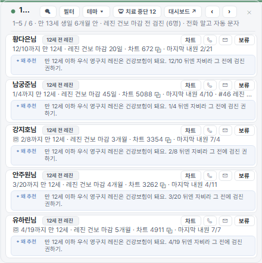

12세 전 레진 리콜 — 가장 고마워하는 전화
만 12세 이하 영구치 충치 레진은 건강보험이 적용돼요. 만 13세 생일이 되면 같은 치료가 비급여가 되니, 그 전에 먼저 알려 드리는 전화는 보호자분이 가장 고마워하는 리콜이에요.
왜 반응이 좋을까
보호자 입장에서는 「몰랐으면 비싸게 할 뻔한 걸 치과가 먼저 챙겨 줬다」는 전화예요. 광고가 아니라 혜택을 알려 주는 연락이라 끊지 않고 끝까지 들으세요.
현장에서는「이런 걸 챙겨 주다니, 시간 내서 바로 갈게요」 하고 예약하시는 분이 많아요. 아이를 데리고 오신 김에 보호자분도 스케일링이나 검진을 받고 가시는 일이 자주 생기고, 치과에 대한 믿음(라포)이 확 올라가요.
데스크알리미를 만든 치과 원장님 말씀으로도 「리콜 타율이 좋은 게 13세 임박한 아이들」이에요. 아이는 혼자 오지 않으니 보호자 정기검진까지 함께 잡혀요.
거는 때
- 만 13세 생일 전날까지가 대상이라, 그 몇 달 전부터 — 바쁜 학기 중이면 방학 일정까지 생각해서 일찍
- 검진에서 충치가 보였거나, 관찰하기로 한 치아가 있는 아이에게만 — 기록 없는 아이에게 보험 얘기부터 하면 영업 전화로 들려요
- 유치·사랑니(제3대구치)는 대상이 아니니 영구치인지 먼저 확인
본인 확인 뒤 그대로 읽으면 되는 멘트○○ 보호자님, ○○치과예요. 지난번 검진 때 ○○ 어금니를 지켜보기로 했었는데, 한번 보여 주시면 좋을 때라 연락드렸어요. 혹시 치료가 필요하면 만 13세 전에는 레진도 건강보험이 돼요. 오실 때 보호자님 스케일링도 같이 봐 드릴 수 있어요.
보호자 스케일링까지 함께
만 19세 이상은 스케일링이 1년에 한 번(1월~12월 기준) 건강보험이 되고, 안 쓰면 다음 해로 넘어가지 않아요. 아이 예약을 잡을 때 보호자분 올해 스케일링을 했는지 한 번 물어보면 한 번에 두 분이 오세요.

자주 묻는 것
12세 이하 레진 건강보험은 언제부터예요?
2019년 1월부터 만 12세 이하 아동의 영구치 충치 치료(광중합형 복합레진 충전)에 건강보험이 적용되고 있어요. 유치와 사랑니는 대상이 아니에요.
스케일링 건강보험은 몇 번 되나요?
만 19세 이상은 매년 1월 1일~12월 31일 사이 1번 건강보험이 적용돼요. 안 받으면 다음 해로 넘어가지 않아요.
이런 분, 데스크알리미가 매일 골라 줘요
리콜 [테마 ▾]의 「12세 전 레진」을 누르면 생일 전 레진 건보 마감이 다가오는 아이들만 남아요. 줄마다 마감까지 남은 날과 왜 추천이 있어 급한 순서대로 걸 수 있어요.
📄 리콜보다 먼저 써 보면 좋은 기능 — 보험서류 5종 한 번에 만들기 →
✔ 덴트웹은 그대로 쓰고 옆에 막대 하나만 · ✔ 덴트웹 기록은 바꾸지 않아요 · ✔ 데스크알리미를 만든 치과 데스크가 매일 쓰는 도구
데스크알리미 = 덴트웹 쓰는 치과 데스크 화면 구석에 뜨는 막대형 도우미예요. 덴트웹은 그대로 쓰고 옆에 하나만 더 띄워요.
출처·근거: 데일리팜 — 12세 이하 영구치 광중합형 복합레진 급여(2019.1 시행) · 국민건강보험공단 — 치석제거 연 1회 급여
올린 날 2026-11-23 · 고친 날 2026-11-23